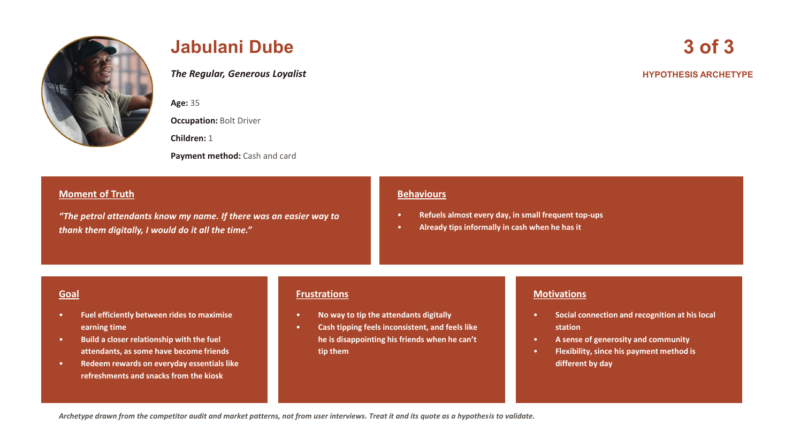
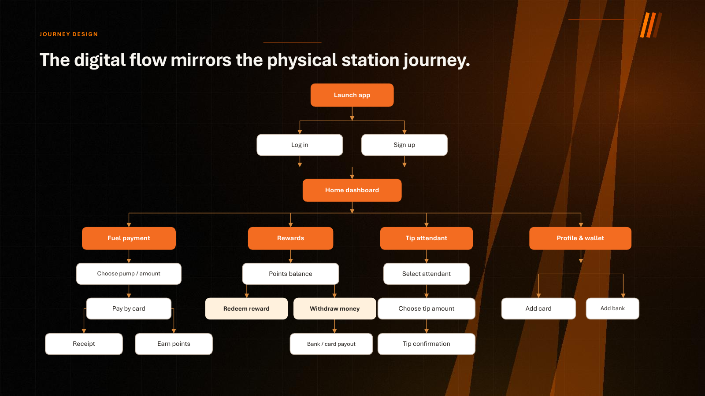

Problem
Reward value and ways to use it can be difficult to understand.
A fuel-retail loyalty concept exploring how customers can see reward value, choose how to use it and recognise good service with less friction.
I reviewed fuel-retail and adjacent loyalty experiences, synthesised recurring patterns, and translated the opportunities into a mobile MVP concept covering rewards, fuel payment, redemption and digital tipping.
Reward value and ways to use it can be difficult to understand.
Competitor audit, synthesis, product framing, journey and interface concept.
Customers can understand their balance and complete key tasks confidently, while station workflows remain practical.
A rewards balance only feels valuable when customers understand what it is worth and how to use it. Across a fuel-stop journey, unclear rules or hidden options can turn an apparent benefit into extra effort. I explored how the experience could make value and next steps easier to see.
Help customers understand their balance and what it is worth.
Make earning and redemption options easier to understand.
Explore whether digital tipping fits naturally into the refuelling experience.
I led the concept work across competitor review, synthesis, experience mapping and interface exploration. I made the findings actionable by turning observed patterns into design principles, prioritised journeys and a prototype for discussion. The case study documents an individual concept, not a shipped product or measured pilot.
Reviewed Sasol Rewards, BP Rewards, Engen 1App and adjacent programmes to compare value communication, earning, redemption and service features.
Synthesised the review into three experience needs: make value visible, give customers understandable choices, and avoid adding friction at the station.
Mapped the main tasks, organised the information architecture and explored low- and high-fidelity flows for payment, rewards, redemption and tipping.
The concept artefacts are structured to support critique with product, engineering and station stakeholders. Their feedback and operational validation remain important next steps; no completed stakeholder testing is claimed here.
These two archetypes represent different motivations surfaced through the competitor audit. One needs to understand value across everyday spending; the other values the relationship with attendants and wants choice in how to show appreciation. Together they highlight why the experience should not force everyone into one payment or reward behaviour.
NeedsClear value from everyday spending, an easy-to-understand rewards balance, and flexibility between payment methods.
ValuesFinancial control, practicality, transparency and getting meaningful value from routine purchases.

NeedsA quick, reliable way to recognise attendants and choose how much to tip without adding friction to a fuel stop.
ValuesPersonal relationships, generosity, convenience and having choice over how to show appreciation.
The information architecture mirrors the physical station journey. From the dashboard, people can move directly to fuel payment, rewards, tipping, or profile and wallet tasks, with each path broken into clear steps.

Fuel payment and attendant tipping are distinct, direct paths, helping keep the most time-sensitive tasks easy to reach.
Rewards has a clear home for points balance, redemption and withdrawal instead of hiding them in unrelated flows.
Payment methods and wallet management remain accessible so customers can choose how to pay and use value.
The journey connects the everyday goal of refuelling with the need to understand rewards and complete tasks quickly.
The customer opens Velocity and wants to know what is available without searching through menus.
NeedImmediate clarity on balance and key actions.
Design responseHome dashboard with a visible rewards balance and direct task entry points.
The customer wants to complete a familiar station task with minimal delay.
NeedA clear, low-friction payment path.
Design responseKeep fuel payment separate and easy to find from the main dashboard.
The customer wants to understand what has been earned and what it can be used for.
NeedVisible value and understandable redemption choices.
Design responseBring points into one balance and give rewards a dedicated area.
The customer considers redemption, withdrawal or other ways to access value.
NeedTransparent options and clear rules.
Design responseMake redemption and wallet tasks distinct, while treating cash-out as a hypothesis to validate.
The customer may want to thank an attendant without slowing down the stop.
NeedA quick and intentional tipping interaction.
Design responseA separate tipping flow that clearly identifies the attendant and amount.
Validation opportunity: Test task order, comprehension, time-on-task and whether tipping fits the real station workflow with motorists, attendants and station operators.
Sasol Rewards is a useful local benchmark because it connects fuel and convenience-store activity to a recognisable rewards proposition.
Show the value and conditions at the moment customers need to make a decision.
Points balance and redemption: make it easy to see what has been earned and what can be done next.
Do not make customers decode programme mechanics to understand their benefit.
This is a qualitative design review, not a customer satisfaction ranking. Confirm current programme terms against the latest official Sasol Rewards information before publication.
The comparison focuses on the features most relevant to the Velocity concept. It is a directional audit, not a full feature or commercial benchmark.
| Experience | Rewards value | Redemption choice | Fuel-stop integration | Digital tipping |
|---|---|---|---|---|
| Sasol Rewards | Points-based | Programme options | Strong fuel-retail context | Not a core proposition |
| BP Rewards | Rewards linked to eligible activity | Programme options | Fuel-retail context | Not a core proposition |
| Engen 1App | App-led customer benefits | App and partner offers | Strong station context | Not a core proposition |
The screen sequence maps the key interactions across the Velocity concept, from attendant identification and fuel payment to rewards, redemption and confirmation.


Bring balance and value into view so customers can understand what they have earned.
Consider whether customers should be able to earn without being tied to one payment card.
Consider cash access as one possible use of rewards, while checking feasibility and programme economics.
Offer a way to thank attendants digitally only if customers, attendants and station operators find it useful and workable.
Flexible redemption may increase usefulness but can add cost, rules and support requirements.
Digital tipping should not slow refuelling or create confusion for attendants and customers.
The output is a connected product concept and prototype spanning rewards visibility, fuel payment, redemption and digital tipping. No live-product performance data or user-test results are available in this case study, so impact is framed as measurable success criteria rather than claimed outcomes.
Can customers correctly explain their balance, value and eligibility?
Can customers find rewards and complete key payment or redemption tasks without assistance?
Can tipping and payment fit the station workflow without adding service friction?
The strongest opportunities sit at the intersection of customer value and operational fit. Cash-out and digital tipping could add flexibility, but they also affect programme economics and frontline workflows. These are the areas to investigate before setting MVP priorities.
View the supplied case study exactly as provided.